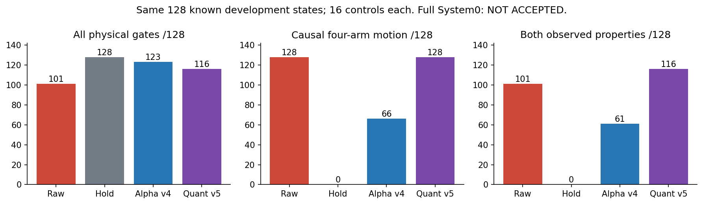
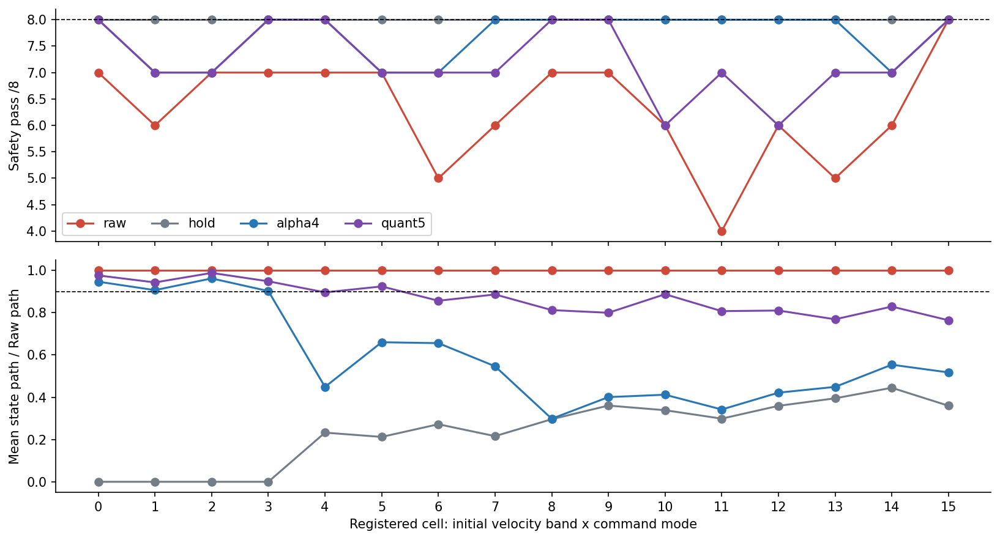
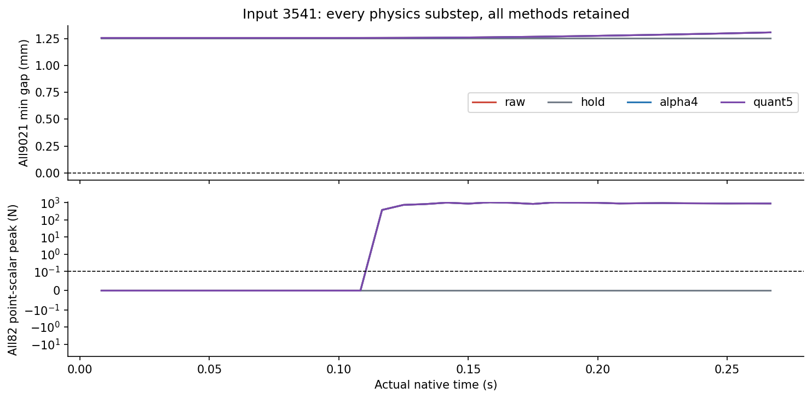
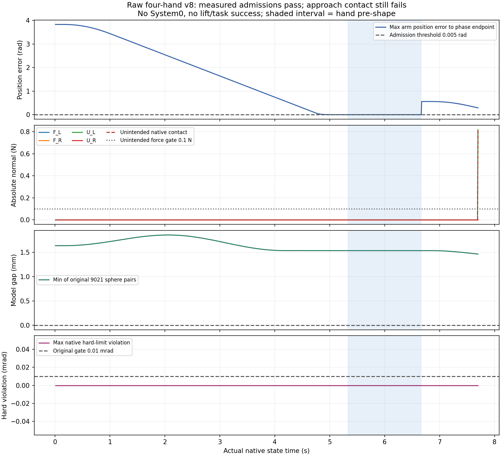
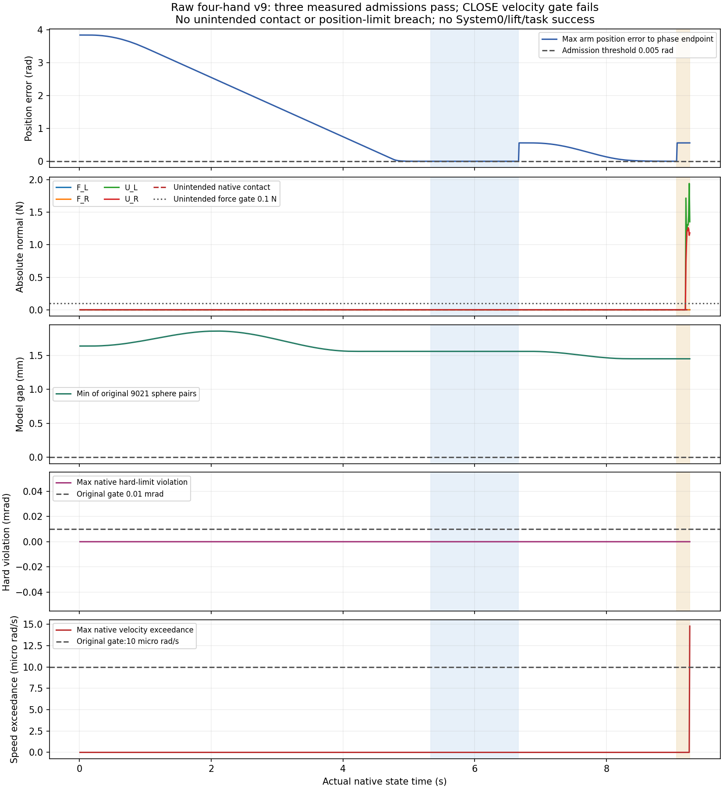
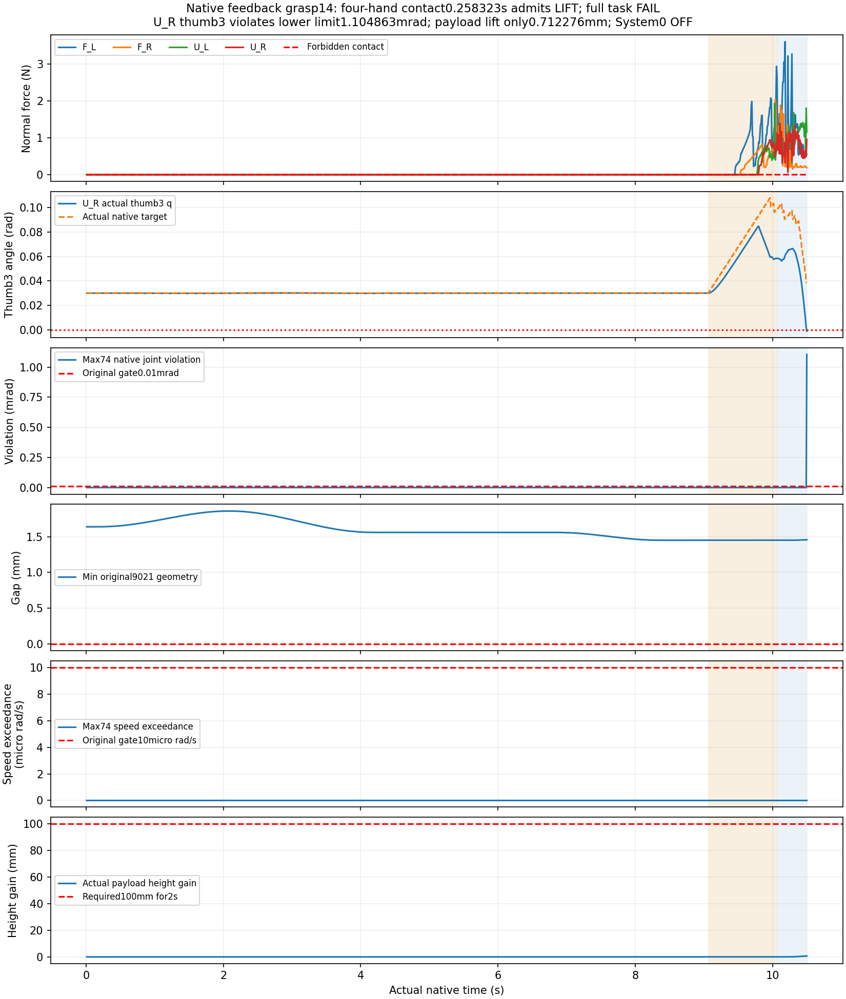
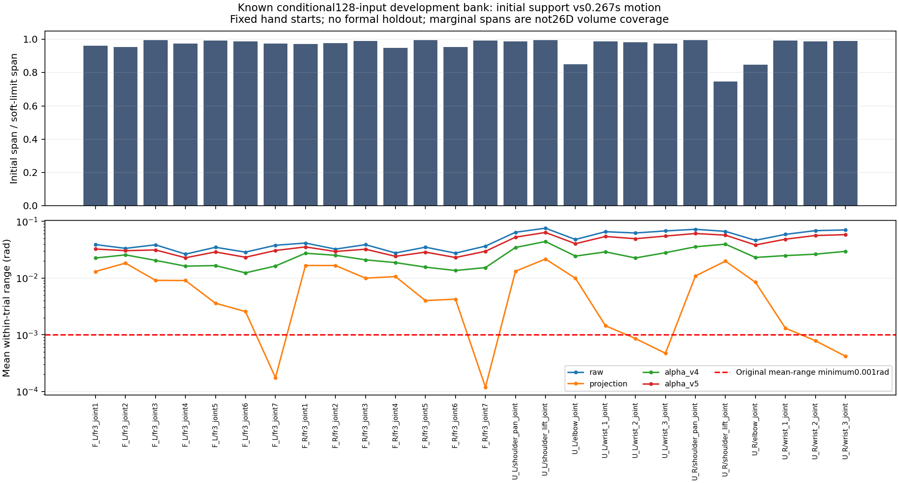

四臂动作与安全：全部128条配对对照
v4：123/128安全通过、66/128有指令导致的四臂运动。v5：116/128安全通过、128/128有四臂运动；运动恢复伴随7条相对v4新增失败。这两版均不采用。
实测范围：同一已知开发集，128初态 × 4方法 × 16控制周期（每条0.266656秒／32原生物理子步）；6周期目标延迟；共同重力补偿；实验v7：2FR3/F2 + 2UR5/DFX。不是正式独立留出，不是长时任务验收。
安全与有效动作一起看
“四臂运动”这里指相同初态下，轨迹相对保持参考的各臂最大差异都大于1毫弧度。该阈值用于剔除仅有初始惯性的画面；它本身不是科研任务成功门槛。路径是全部26个受控关节的L1累计运动。
| 方法 | 安全联合通过 | 四臂指令运动 | 两者同时 | 总路径 rad | 各状态路径比例均值 |
|---|---|---|---|---|---|
| Raw：共同补偿，无投影 | 101/128 | 128/128 | 101/128 | 179.983 | 100.0% |
| 旧回退：保持目标 | 128/128 | 0/128 | 0/128 | 46.008 | 23.7% |
| 四α候选 v4 | 123/128 | 66/128 | 61/128 | 100.607 | 58.9% |
| 浮点修复候选 v5 | 116/128 | 128/128 | 116/128 | 154.642 | 86.9% |

安全联合通过要求逐物理步：9021对原始球几何距离非负、82碰撞刚体全部伙伴逐点标量法向力不超过0.1N、74关节硬限位与限速越界不超过10⁻⁵。没有调低门槛或移除失败样本。网格完整碰撞证书与隐式PD总力矩仍不在此判据的证明范围内。
16个分层，全数保留
每层8个输入。四个初速度档为0／50%／75%／100%原生限速，分别与4种登记命令类型组合。v5各分层路径比例并未全部达到90%；全128安全也未通过，不能用总体均值掩盖失败分层。

12条失败：逐物理步对照
最坏真实接触峰值仍为5745.895 N，最低原始几何间隙为−19.601 mm。六条已定位的失败涉及UR前臂与腕部，旧球模型把这对非相邻部件排除了。离线资产凸包模型已建立，但原生烹制碰撞形状与接触偏置尚未绑定，不能把它当作已证明安全的修复。
当前展示输入 3541；四种方法同初态完整32子步。



随机范围是否够大
32,000个全软限位提案，单关节边际范围达到原登记支持的99.98%～99.999%。963个几何合格，512进入物理前缀测试，263个完整合格；本轮按16分层选择128个。
目标分量单步上限20毫弧度，只有16控制周期。全74关节被观测，手指保持原目标；没有证明自由手指动作、大物体扰动或长程随机操作。
独立多种子、长轨迹、手指动作、物体尺寸／质量／摩擦、摆放与桌子变化、观测噪声／丢失／过时、延迟与执行故障，以及定向交叉／自碰／桌碰。
筛选后的128个是条件开发样本；提案分布、合格域与实际执行范围分别报告。相关窗口和已调试样本不用于推导IID安全概率上界。正式独立留出验收仍为0。
四手同一物体：真实夹持仍待通过
新任务选用同一根700mm铝型材，四手共同接触；提高支撑高度，为指尖留出实际操作空间。27种布局中8种通过五阶段静态可达检查，8条连续全9021开手模型路径中3条通过；全部失败布局保留。这仍是模型结果，闭手碰撞与真实摩擦夹持必须原生验证。
最新V14：四手接触持续0.258323秒，通过闭合门槛进入LIFT，但完整任务仍失败。630控制周期、1260物理子步、10.49958秒。反馈控制依据实际接触力、关节位置、速度及连续位置变化，分别调节手指和拇指闭合量。独立程序没有导入候选控制器，重算了344次逐手决定，核对实际原生位置目标，全部吻合。软件7项回归及400次模式变化不计作物理实验。
抬升开始后，U_R右拇指第三关节越过下限1.104863mrad，超过原定0.01mrad容差，完整任务判失败。全部已记录1260步非预期接触为0、速度超限为0、9021项原始几何间隙为正；手梁峰值接触力3.612116N。物体实际高度只增加0.712276mm，尚未达到100mm并稳定2秒，搬运、放置、释放和完整撤离均未完成。本轮是已知开发任务的反馈夹持测试，System0未开启，正式留出样本为0。
失败沿线保留：V12修复控制器目标跳变后，四手接触只有0.116662秒，右F2拇指第三关节越限2.334687mrad。V13仅改变接触求解顺序，在关节越限前出现32.162364N手梁力，超过原定30N，已拒绝该设置。V14恢复V12物理设置并增加反馈控制。两个右F2关节的X轴已通过原始URDF和USD局部旋转核对，父坐标系方向误差小于2.1×10⁻⁸；不能随意改成Z轴。全部失败均保留。
任务门槛保持：四手均有实际接触，抬升至少100mm且稳定2秒，无支撑偷托；搬运、稳定放置、按实际手姿确认释放与无再接触撤离。物体完整位姿、大小、速度和实际接触逐帧输入；这是仿真真实状态反馈，视觉感知仍未验收。保护开启／关闭的共同任务对照与选择性暂停/恢复还未通过。
每视角保留全部159个原生采样帧，从初态连续展示到触发门槛。MP4下载保留逐帧时间戳，最大误差小于10⁻⁶秒；网页优先播放WebM，同样159帧，容器时间精度造成的最大误差为0.496毫秒。片尾约67毫秒是终态显示，不是额外物理运行。
独立审计 · 任务阶段与失败 · 全9021／82刚体逐点力／74关节／物体摩擦与视频SHA清单
前次速度迭代0的原生失败记录：全部原始数组与视频 · 独审。两次均为无System0的失败开发测试，不能当作保护开关对照。


蓝色阴影为手部预成形阶段；原有9021球对间隙保持正值，原生物体接触仍失败。图中无System0保护，无抬升成功。
闭合等待v7的完整历史：原始数组与视频 · 俯视 · 正视 · 侧视 · 全景。
三次阶段准入独立重算 · 1112步科研曲线来源 · 完整手部几何、运动学与控制器修复证据

V8历史全数据与四视角：924步侧车 · 俯视 · 正视 · 侧视 · 总览。
V14独立物理与任务审计 · 344次反馈决定与实际目标核对 · 完整撤离终点未完成 · 软件测试边界

历史完整四视角及原始侧车：V12目标连续性修复后越限 · V12视频 · V13接触求解顺序导致力超限 · V13视频 · V9速度失败 · 原始关节轴及接触响应诊断。
随机范围新增实测审计：同一128输入开发集的26个机械臂关节，初始位置平均跨度为软限范围96.159%，最窄为74.625%；单关节10分箱最少占6箱，双关节10×10分箱平均占65.917%。这些是边际和双关节描述，不代表26维可达空间覆盖率。48个手指关节初始跨度为0，单条轨迹0.266656秒。原始轨迹各关节的平均运动范围仅占软限跨度0.469%～0.956%。完整随机覆盖和长时动作验收仍未达标。

求解器速度迭代4的前次闭合越界记录：全部原始数组与视频 · 俯视 · 正视 · 侧视 · 全景。这些都是无System0的开发失败，不能当作保护开关对照。
已有录像可在旧128条四视角页面查看，其来源与本轮短程动作测试不同。
全部9项联合验收，逐项缺口
判据保持原登记要求；开发集单项通过不代表完整验收。下载验收矩阵 JSON
| 要求 | 当前状态 | 实测证据 | 未完成事项 |
|---|---|---|---|
| 回退保持在原始非零速度和延迟下持续安全 | DEVELOPMENT_LONG128_PASS_FORMAL_PENDING | 128条×480周期开发集保持通过；仍非有效操作，正式独立960周期未验收 | 独立冻结多种子与运行时未来安全/制动认证 |
| 保留操作意图并有实际四臂运动 | FAIL | v4安全123/128且四臂指令运动66/128；v5安全116/128且运动128/128。分层路径90%门槛仍失败 | 漏检碰撞和FIFO到达/未来保持；选择性暂停、恢复及任务完成 |
| 强随机、大范围操作空间与定向危害覆盖 | PARTIAL_CONDITIONAL_DEVELOPMENT | 初始26关节跨度平均96.159%、最窄74.625%；48手指起点固定；同一筛选128开发集，单条0.266656s | 随机手指与持续广范围动作、对象与布局/故障分层；边际跨度不等于26维可达覆盖 |
| 科学规范的冻结协议、独立多种子、留出与不确定性报告 | NOT_ACCEPTED | 当前全部为已知开发样本；正式独立留出验收0 | 候选修复后冻结至少两套独立新种子；保留所有失败，报告最坏种子 |
| 物体位置、姿态、大小、速度、可达性进入明确规划与安全输入 | PARTIAL_NATIVE_GROUND_TRUTH | 四手138源碰撞组件与54所有者完整提取；924步FK核对；434源模型路径采样通过；V9全1112步物体、手姿、接触与摩擦原始点保留 | 实际烘焙网格/偏移逐形状绑定、负载与未来连续运动保证、感知故障和视觉输入验收 |
| 真实物理夹持、抬升、搬运、放置和释放 | FAIL | V14四手接触0.258323秒进入LIFT；随后UR右拇指3越限1.104863mrad，实际抬升0.712276mm，完整任务失败 | 修复接触负载下关节越限、充分摩擦负载支撑、100mm/2s抬升及搬运放置释放和完整撤离 |
| 真实四臂共同任务且有安全与不安全的同输入对照 | NOT_ACCEPTED | 已知开发同梁四手接触通过0.25s；1260物理步完整保留，System0未开启；完整协作任务未通过 | 真实完整四手任务及System0开启/关闭同输入对照 |
| 完整原生观测和独立危害判据，无漏测或单看画面 | PASS_RECORDED_BOUNDED_CASES_WITH_LIMITS | 全1260步74关节/9021原始几何/82刚体点接触/FIFO/物体状态及摩擦；344次反馈决定和实际目标独立重算 | 实际烘焙全形状认证、真实视觉感知、延迟到达状态及负载预测界 |
| 网页可审阅的安全对照、完整视角和证据归档 | PARTIAL_SAFE_TASK_COMPARISON_NOT_ACCEPTED | V14四视角636源帧/1260步完整侧车；V12/V13及全部旧记录保留；逐关节随机范围与任务失败科研图 | System0同任务开关对照和完整成功任务视频 |
全部512条方法结果
CSV · 完整汇总 JSON · 证据路径与SHA清单
展开全部128输入 × 4方法
| 输入 | 方法 | 分层 | 安全 | 四臂指令运动 | 路径比例 | 最小间隙 mm | 接触峰值 N |
|---|---|---|---|---|---|---|---|
| 1284 | Raw：共同补偿，无投影 | 0 | 通过 | 是 | 100.0% | 1.524 | 0.000 |
| 2419 | Raw：共同补偿，无投影 | 0 | 通过 | 是 | 100.0% | 1.047 | 0.000 |
| 5188 | Raw：共同补偿，无投影 | 0 | 通过 | 是 | 100.0% | 0.866 | 0.000 |
| 6092 | Raw：共同补偿，无投影 | 0 | 通过 | 是 | 100.0% | 1.278 | 0.000 |
| 1288 | Raw：共同补偿，无投影 | 1 | 失败 | 是 | 100.0% | -0.146 | 0.000 |
| 1779 | Raw：共同补偿，无投影 | 1 | 通过 | 是 | 100.0% | 1.717 | 0.000 |
| 2435 | Raw：共同补偿，无投影 | 1 | 通过 | 是 | 100.0% | 0.955 | 0.000 |
| 3541 | Raw：共同补偿，无投影 | 1 | 失败 | 是 | 100.0% | 1.259 | 1028.372 |
| 1793 | Raw：共同补偿，无投影 | 2 | 失败 | 是 | 100.0% | 0.910 | 5745.895 |
| 3033 | Raw：共同补偿，无投影 | 2 | 通过 | 是 | 100.0% | 1.716 | 0.000 |
| 4304 | Raw：共同补偿，无投影 | 2 | 通过 | 是 | 100.0% | 1.574 | 0.000 |
| 5259 | Raw：共同补偿，无投影 | 2 | 通过 | 是 | 100.0% | 1.344 | 0.000 |
| 607 | Raw：共同补偿，无投影 | 3 | 失败 | 是 | 100.0% | -0.461 | 0.000 |
| 1377 | Raw：共同补偿，无投影 | 3 | 通过 | 是 | 100.0% | 1.369 | 0.000 |
| 1830 | Raw：共同补偿，无投影 | 3 | 通过 | 是 | 100.0% | 1.703 | 0.000 |
| 2487 | Raw：共同补偿，无投影 | 3 | 通过 | 是 | 100.0% | 1.347 | 0.000 |
| 1834 | Raw：共同补偿，无投影 | 4 | 通过 | 是 | 100.0% | 0.819 | 0.000 |
| 2520 | Raw：共同补偿，无投影 | 4 | 通过 | 是 | 100.0% | 1.308 | 0.000 |
| 3078 | Raw：共同补偿，无投影 | 4 | 失败 | 是 | 100.0% | -0.368 | 0.000 |
| 4320 | Raw：共同补偿，无投影 | 4 | 通过 | 是 | 100.0% | 1.759 | 0.000 |
| 720 | Raw：共同补偿，无投影 | 5 | 通过 | 是 | 100.0% | 1.465 | 0.000 |
| 1458 | Raw：共同补偿，无投影 | 5 | 通过 | 是 | 100.0% | 1.195 | 0.000 |
| 1887 | Raw：共同补偿，无投影 | 5 | 失败 | 是 | 100.0% | -20.662 | 539.658 |
| 3643 | Raw：共同补偿，无投影 | 5 | 通过 | 是 | 100.0% | 1.223 | 0.000 |
| 229 | Raw：共同补偿，无投影 | 6 | 通过 | 是 | 100.0% | 1.664 | 0.000 |
| 1966 | Raw：共同补偿，无投影 | 6 | 通过 | 是 | 100.0% | 0.948 | 0.000 |
| 2592 | Raw：共同补偿，无投影 | 6 | 失败 | 是 | 100.0% | -1.856 | 0.000 |
| 4823 | Raw：共同补偿，无投影 | 6 | 通过 | 是 | 100.0% | 1.222 | 0.000 |
| 2049 | Raw：共同补偿，无投影 | 7 | 通过 | 是 | 100.0% | 0.968 | 0.000 |
| 3209 | Raw：共同补偿，无投影 | 7 | 失败 | 是 | 100.0% | -5.461 | 0.000 |
| 4408 | Raw：共同补偿，无投影 | 7 | 通过 | 是 | 100.0% | 1.362 | 0.000 |
| 4830 | Raw：共同补偿，无投影 | 7 | 通过 | 是 | 100.0% | 1.169 | 0.000 |
| 270 | Raw：共同补偿，无投影 | 8 | 通过 | 是 | 100.0% | 1.812 | 0.000 |
| 1518 | Raw：共同补偿，无投影 | 8 | 通过 | 是 | 100.0% | 1.159 | 0.000 |
| 2141 | Raw：共同补偿，无投影 | 8 | 失败 | 是 | 100.0% | -4.370 | 0.000 |
| 2624 | Raw：共同补偿，无投影 | 8 | 通过 | 是 | 100.0% | 1.227 | 0.000 |
| 804 | Raw：共同补偿，无投影 | 9 | 通过 | 是 | 100.0% | 1.188 | 0.000 |
| 2171 | Raw：共同补偿，无投影 | 9 | 通过 | 是 | 100.0% | 1.592 | 0.000 |
| 3254 | Raw：共同补偿，无投影 | 9 | 失败 | 是 | 100.0% | -0.064 | 0.000 |
| 3858 | Raw：共同补偿，无投影 | 9 | 通过 | 是 | 100.0% | 1.038 | 0.000 |
| 339 | Raw：共同补偿，无投影 | 10 | 通过 | 是 | 100.0% | 0.952 | 0.000 |
| 1543 | Raw：共同补偿，无投影 | 10 | 通过 | 是 | 100.0% | 1.139 | 0.000 |
| 2172 | Raw：共同补偿，无投影 | 10 | 通过 | 是 | 100.0% | 0.951 | 0.000 |
| 2656 | Raw：共同补偿，无投影 | 10 | 失败 | 是 | 100.0% | -9.073 | 0.000 |
| 340 | Raw：共同补偿，无投影 | 11 | 通过 | 是 | 100.0% | 1.119 | 0.000 |
| 1591 | Raw：共同补偿，无投影 | 11 | 失败 | 是 | 100.0% | -4.677 | 0.000 |
| 2174 | Raw：共同补偿，无投影 | 11 | 通过 | 是 | 100.0% | 1.539 | 0.000 |
| 3311 | Raw：共同补偿，无投影 | 11 | 通过 | 是 | 100.0% | 1.056 | 0.000 |
| 345 | Raw：共同补偿，无投影 | 12 | 通过 | 是 | 100.0% | 1.812 | 0.000 |
| 1616 | Raw：共同补偿，无投影 | 12 | 失败 | 是 | 100.0% | -25.155 | 366.873 |
| 2181 | Raw：共同补偿，无投影 | 12 | 通过 | 是 | 100.0% | 0.860 | 0.000 |
| 3331 | Raw：共同补偿，无投影 | 12 | 通过 | 是 | 100.0% | 1.553 | 0.000 |
| 375 | Raw：共同补偿，无投影 | 13 | 通过 | 是 | 100.0% | 0.821 | 0.000 |
| 1069 | Raw：共同补偿，无投影 | 13 | 失败 | 是 | 100.0% | 1.663 | 1080.019 |
| 4035 | Raw：共同补偿，无投影 | 13 | 通过 | 是 | 100.0% | 1.124 | 0.000 |
| 5628 | Raw：共同补偿，无投影 | 13 | 通过 | 是 | 100.0% | 0.078 | 0.000 |
| 399 | Raw：共同补偿，无投影 | 14 | 通过 | 是 | 100.0% | 1.755 | 0.000 |
| 2221 | Raw：共同补偿，无投影 | 14 | 通过 | 是 | 100.0% | 0.874 | 0.000 |
| 5111 | Raw：共同补偿，无投影 | 14 | 通过 | 是 | 100.0% | 1.076 | 0.000 |
| 7385 | Raw：共同补偿，无投影 | 14 | 通过 | 是 | 100.0% | 1.401 | 0.000 |
| 1212 | Raw：共同补偿，无投影 | 15 | 通过 | 是 | 100.0% | 1.351 | 0.000 |
| 2387 | Raw：共同补偿，无投影 | 15 | 通过 | 是 | 100.0% | 1.199 | 0.000 |
| 2932 | Raw：共同补偿，无投影 | 15 | 通过 | 是 | 100.0% | 1.215 | 0.000 |
| 4082 | Raw：共同补偿，无投影 | 15 | 通过 | 是 | 100.0% | 1.535 | 0.000 |
| 6596 | Raw：共同补偿，无投影 | 0 | 失败 | 是 | 100.0% | -0.764 | 0.000 |
| 7470 | Raw：共同补偿，无投影 | 0 | 通过 | 是 | 100.0% | 0.952 | 0.000 |
| 8556 | Raw：共同补偿，无投影 | 0 | 通过 | 是 | 100.0% | 0.917 | 0.000 |
| 9208 | Raw：共同补偿，无投影 | 0 | 通过 | 是 | 100.0% | 1.666 | 0.000 |
| 4168 | Raw：共同补偿，无投影 | 1 | 通过 | 是 | 100.0% | 0.822 | 0.000 |
| 4763 | Raw：共同补偿，无投影 | 1 | 通过 | 是 | 100.0% | 1.135 | 0.000 |
| 5216 | Raw：共同补偿，无投影 | 1 | 通过 | 是 | 100.0% | 1.293 | 0.000 |
| 6100 | Raw：共同补偿，无投影 | 1 | 通过 | 是 | 100.0% | 1.833 | 0.000 |
| 5707 | Raw：共同补偿，无投影 | 2 | 通过 | 是 | 100.0% | 1.555 | 0.000 |
| 6651 | Raw：共同补偿，无投影 | 2 | 通过 | 是 | 100.0% | 0.908 | 0.000 |
| 7494 | Raw：共同补偿，无投影 | 2 | 通过 | 是 | 100.0% | 1.063 | 0.000 |
| 9244 | Raw：共同补偿，无投影 | 2 | 通过 | 是 | 100.0% | 1.452 | 0.000 |
| 3618 | Raw：共同补偿，无投影 | 3 | 通过 | 是 | 100.0% | 1.380 | 0.000 |
| 4776 | Raw：共同补偿，无投影 | 3 | 通过 | 是 | 100.0% | 1.035 | 0.000 |
| 5287 | Raw：共同补偿，无投影 | 3 | 通过 | 是 | 100.0% | 1.826 | 0.000 |
| 5773 | Raw：共同补偿，无投影 | 3 | 通过 | 是 | 100.0% | 0.982 | 0.000 |
| 5787 | Raw：共同补偿，无投影 | 4 | 通过 | 是 | 100.0% | 1.212 | 0.000 |
| 6249 | Raw：共同补偿，无投影 | 4 | 通过 | 是 | 100.0% | 1.846 | 0.000 |
| 7192 | Raw：共同补偿，无投影 | 4 | 通过 | 是 | 100.0% | 1.730 | 0.000 |
| 7540 | Raw：共同补偿，无投影 | 4 | 通过 | 是 | 100.0% | 1.477 | 0.000 |
| 4358 | Raw：共同补偿，无投影 | 5 | 通过 | 是 | 100.0% | 1.373 | 0.000 |
| 4804 | Raw：共同补偿，无投影 | 5 | 通过 | 是 | 100.0% | 1.599 | 0.000 |
| 5798 | Raw：共同补偿，无投影 | 5 | 通过 | 是 | 100.0% | 1.177 | 0.000 |
| 6255 | Raw：共同补偿，无投影 | 5 | 通过 | 是 | 100.0% | 1.683 | 0.000 |
| 6775 | Raw：共同补偿，无投影 | 6 | 通过 | 是 | 100.0% | 1.096 | 0.000 |
| 7280 | Raw：共同补偿，无投影 | 6 | 失败 | 是 | 100.0% | -22.981 | 0.000 |
| 7576 | Raw：共同补偿，无投影 | 6 | 通过 | 是 | 100.0% | 0.962 | 0.000 |
| 8618 | Raw：共同补偿，无投影 | 6 | 失败 | 是 | 100.0% | -9.148 | 0.000 |
| 5859 | Raw：共同补偿，无投影 | 7 | 失败 | 是 | 100.0% | 1.330 | 493.526 |
| 6777 | Raw：共同补偿，无投影 | 7 | 通过 | 是 | 100.0% | 1.135 | 0.000 |
| 7581 | Raw：共同补偿，无投影 | 7 | 通过 | 是 | 100.0% | 0.849 | 0.000 |
| 8765 | Raw：共同补偿，无投影 | 7 | 通过 | 是 | 100.0% | 0.908 | 0.000 |
| 3225 | Raw：共同补偿，无投影 | 8 | 通过 | 是 | 100.0% | 1.312 | 0.000 |
| 3822 | Raw：共同补偿，无投影 | 8 | 通过 | 是 | 100.0% | 0.947 | 0.000 |
| 4852 | Raw：共同补偿，无投影 | 8 | 通过 | 是 | 100.0% | 1.608 | 0.000 |
| 5861 | Raw：共同补偿，无投影 | 8 | 通过 | 是 | 100.0% | 1.037 | 0.000 |
| 4469 | Raw：共同补偿，无投影 | 9 | 通过 | 是 | 100.0% | 1.322 | 0.000 |
| 5496 | Raw：共同补偿，无投影 | 9 | 通过 | 是 | 100.0% | 1.372 | 0.000 |
| 5876 | Raw：共同补偿，无投影 | 9 | 通过 | 是 | 100.0% | 0.972 | 0.000 |
| 6783 | Raw：共同补偿，无投影 | 9 | 通过 | 是 | 100.0% | 1.260 | 0.000 |
| 3275 | Raw：共同补偿，无投影 | 10 | 通过 | 是 | 100.0% | 0.874 | 0.000 |
| 4522 | Raw：共同补偿，无投影 | 10 | 通过 | 是 | 100.0% | 1.163 | 0.000 |
| 5915 | Raw：共同补偿，无投影 | 10 | 通过 | 是 | 100.0% | 1.444 | 0.000 |
| 6447 | Raw：共同补偿，无投影 | 10 | 失败 | 是 | 100.0% | -11.872 | 419.343 |
| 3893 | Raw：共同补偿，无投影 | 11 | 失败 | 是 | 100.0% | -4.833 | 0.000 |
| 5606 | Raw：共同补偿，无投影 | 11 | 通过 | 是 | 100.0% | 1.590 | 0.000 |
| 5939 | Raw：共同补偿，无投影 | 11 | 失败 | 是 | 100.0% | -14.914 | 0.000 |
| 7344 | Raw：共同补偿，无投影 | 11 | 失败 | 是 | 100.0% | -5.126 | 0.000 |
| 3982 | Raw：共同补偿，无投影 | 12 | 失败 | 是 | 100.0% | 0.968 | 2054.926 |
| 4955 | Raw：共同补偿，无投影 | 12 | 通过 | 是 | 100.0% | 1.542 | 0.000 |
| 5973 | Raw：共同补偿，无投影 | 12 | 通过 | 是 | 100.0% | 1.752 | 0.000 |
| 6523 | Raw：共同补偿，无投影 | 12 | 通过 | 是 | 100.0% | 0.254 | 0.000 |
| 5975 | Raw：共同补偿，无投影 | 13 | 通过 | 是 | 100.0% | 1.350 | 0.000 |
| 6537 | Raw：共同补偿，无投影 | 13 | 失败 | 是 | 100.0% | -0.146 | 0.000 |
| 7701 | Raw：共同补偿，无投影 | 13 | 失败 | 是 | 100.0% | 1.367 | 1010.773 |
| 11441 | Raw：共同补偿，无投影 | 13 | 通过 | 是 | 100.0% | 1.762 | 0.000 |
| 8503 | Raw：共同补偿，无投影 | 14 | 失败 | 是 | 100.0% | -0.403 | 0.000 |
| 9641 | Raw：共同补偿，无投影 | 14 | 失败 | 是 | 100.0% | 1.109 | 478.778 |
| 10148 | Raw：共同补偿，无投影 | 14 | 通过 | 是 | 100.0% | 1.602 | 0.000 |
| 12767 | Raw：共同补偿，无投影 | 14 | 通过 | 是 | 100.0% | 1.531 | 0.000 |
| 5646 | Raw：共同补偿，无投影 | 15 | 通过 | 是 | 100.0% | 1.424 | 0.000 |
| 7390 | Raw：共同补偿，无投影 | 15 | 通过 | 是 | 100.0% | 1.383 | 0.000 |
| 8555 | Raw：共同补偿，无投影 | 15 | 通过 | 是 | 100.0% | 1.688 | 0.000 |
| 9088 | Raw：共同补偿，无投影 | 15 | 通过 | 是 | 100.0% | 1.648 | 0.000 |
| 1284 | 旧回退：保持目标 | 0 | 通过 | 否 | 0.0% | 1.524 | 0.000 |
| 2419 | 旧回退：保持目标 | 0 | 通过 | 否 | 0.0% | 1.048 | 0.000 |
| 5188 | 旧回退：保持目标 | 0 | 通过 | 否 | 0.0% | 0.892 | 0.000 |
| 6092 | 旧回退：保持目标 | 0 | 通过 | 否 | 0.0% | 1.278 | 0.000 |
| 1288 | 旧回退：保持目标 | 1 | 通过 | 否 | 0.0% | 1.393 | 0.000 |
| 1779 | 旧回退：保持目标 | 1 | 通过 | 否 | 0.0% | 1.754 | 0.000 |
| 2435 | 旧回退：保持目标 | 1 | 通过 | 否 | 0.0% | 0.955 | 0.000 |
| 3541 | 旧回退：保持目标 | 1 | 通过 | 否 | 0.0% | 1.259 | 0.000 |
| 1793 | 旧回退：保持目标 | 2 | 通过 | 否 | 0.0% | 0.988 | 0.000 |
| 3033 | 旧回退：保持目标 | 2 | 通过 | 否 | 0.0% | 1.717 | 0.000 |
| 4304 | 旧回退：保持目标 | 2 | 通过 | 否 | 0.0% | 1.574 | 0.000 |
| 5259 | 旧回退：保持目标 | 2 | 通过 | 否 | 0.0% | 1.344 | 0.000 |
| 607 | 旧回退：保持目标 | 3 | 通过 | 否 | 0.0% | 0.677 | 0.000 |
| 1377 | 旧回退：保持目标 | 3 | 通过 | 否 | 0.0% | 1.470 | 0.000 |
| 1830 | 旧回退：保持目标 | 3 | 通过 | 否 | 0.0% | 1.703 | 0.000 |
| 2487 | 旧回退：保持目标 | 3 | 通过 | 否 | 0.0% | 1.347 | 0.000 |
| 1834 | 旧回退：保持目标 | 4 | 通过 | 否 | 29.4% | 0.847 | 0.000 |
| 2520 | 旧回退：保持目标 | 4 | 通过 | 否 | 16.2% | 1.308 | 0.000 |
| 3078 | 旧回退：保持目标 | 4 | 通过 | 否 | 21.6% | 1.735 | 0.000 |
| 4320 | 旧回退：保持目标 | 4 | 通过 | 否 | 15.1% | 1.759 | 0.000 |
| 720 | 旧回退：保持目标 | 5 | 通过 | 否 | 16.6% | 1.552 | 0.000 |
| 1458 | 旧回退：保持目标 | 5 | 通过 | 否 | 12.2% | 1.195 | 0.000 |
| 1887 | 旧回退：保持目标 | 5 | 通过 | 否 | 27.7% | 1.444 | 0.000 |
| 3643 | 旧回退：保持目标 | 5 | 通过 | 否 | 22.1% | 1.226 | 0.000 |
| 229 | 旧回退：保持目标 | 6 | 通过 | 否 | 21.7% | 1.704 | 0.000 |
| 1966 | 旧回退：保持目标 | 6 | 通过 | 否 | 34.9% | 0.961 | 0.000 |
| 2592 | 旧回退：保持目标 | 6 | 通过 | 否 | 25.6% | 1.321 | 0.000 |
| 4823 | 旧回退：保持目标 | 6 | 通过 | 否 | 33.2% | 1.262 | 0.000 |
| 2049 | 旧回退：保持目标 | 7 | 通过 | 否 | 19.0% | 0.968 | 0.000 |
| 3209 | 旧回退：保持目标 | 7 | 通过 | 否 | 27.0% | 0.844 | 0.000 |
| 4408 | 旧回退：保持目标 | 7 | 通过 | 否 | 21.3% | 1.362 | 0.000 |
| 4830 | 旧回退：保持目标 | 7 | 通过 | 否 | 17.7% | 1.169 | 0.000 |
| 270 | 旧回退：保持目标 | 8 | 通过 | 否 | 28.3% | 1.812 | 0.000 |
| 1518 | 旧回退：保持目标 | 8 | 通过 | 否 | 42.7% | 1.170 | 0.000 |
| 2141 | 旧回退：保持目标 | 8 | 通过 | 否 | 16.3% | 1.165 | 0.000 |
| 2624 | 旧回退：保持目标 | 8 | 通过 | 否 | 29.6% | 1.227 | 0.000 |
| 804 | 旧回退：保持目标 | 9 | 通过 | 否 | 36.6% | 1.188 | 0.000 |
| 2171 | 旧回退：保持目标 | 9 | 通过 | 否 | 40.0% | 1.634 | 0.000 |
| 3254 | 旧回退：保持目标 | 9 | 通过 | 否 | 33.1% | 0.868 | 0.000 |
| 3858 | 旧回退：保持目标 | 9 | 通过 | 否 | 25.3% | 1.038 | 0.000 |
| 339 | 旧回退：保持目标 | 10 | 通过 | 否 | 28.1% | 0.952 | 0.000 |
| 1543 | 旧回退：保持目标 | 10 | 通过 | 否 | 24.0% | 1.195 | 0.000 |
| 2172 | 旧回退：保持目标 | 10 | 通过 | 否 | 40.9% | 0.951 | 0.000 |
| 2656 | 旧回退：保持目标 | 10 | 通过 | 否 | 38.4% | 1.296 | 0.000 |
| 340 | 旧回退：保持目标 | 11 | 通过 | 否 | 27.8% | 1.119 | 0.000 |
| 1591 | 旧回退：保持目标 | 11 | 通过 | 否 | 30.5% | 0.893 | 0.000 |
| 2174 | 旧回退：保持目标 | 11 | 通过 | 否 | 28.3% | 1.576 | 0.000 |
| 3311 | 旧回退：保持目标 | 11 | 通过 | 否 | 24.7% | 1.047 | 0.000 |
| 345 | 旧回退：保持目标 | 12 | 通过 | 否 | 23.2% | 1.808 | 0.000 |
| 1616 | 旧回退：保持目标 | 12 | 通过 | 否 | 46.6% | 1.344 | 0.000 |
| 2181 | 旧回退：保持目标 | 12 | 通过 | 否 | 37.0% | 0.844 | 0.000 |
| 3331 | 旧回退：保持目标 | 12 | 通过 | 否 | 31.4% | 1.542 | 0.000 |
| 375 | 旧回退：保持目标 | 13 | 通过 | 否 | 48.1% | 0.923 | 0.000 |
| 1069 | 旧回退：保持目标 | 13 | 通过 | 否 | 25.7% | 1.660 | 0.000 |
| 4035 | 旧回退：保持目标 | 13 | 通过 | 否 | 36.9% | 1.135 | 0.000 |
| 5628 | 旧回退：保持目标 | 13 | 通过 | 否 | 43.8% | 1.311 | 0.000 |
| 399 | 旧回退：保持目标 | 14 | 通过 | 否 | 56.1% | 1.755 | 0.000 |
| 2221 | 旧回退：保持目标 | 14 | 通过 | 否 | 31.3% | 0.874 | 0.000 |
| 5111 | 旧回退：保持目标 | 14 | 通过 | 否 | 48.3% | 1.076 | 0.000 |
| 7385 | 旧回退：保持目标 | 14 | 通过 | 否 | 40.8% | 1.438 | 0.000 |
| 1212 | 旧回退：保持目标 | 15 | 通过 | 否 | 36.4% | 1.340 | 0.000 |
| 2387 | 旧回退：保持目标 | 15 | 通过 | 否 | 40.1% | 1.191 | 0.000 |
| 2932 | 旧回退：保持目标 | 15 | 通过 | 否 | 36.7% | 1.215 | 0.000 |
| 4082 | 旧回退：保持目标 | 15 | 通过 | 否 | 34.8% | 1.564 | 0.000 |
| 6596 | 旧回退：保持目标 | 0 | 通过 | 否 | 0.0% | 1.816 | 0.000 |
| 7470 | 旧回退：保持目标 | 0 | 通过 | 否 | 0.0% | 1.042 | 0.000 |
| 8556 | 旧回退：保持目标 | 0 | 通过 | 否 | 0.0% | 0.917 | 0.000 |
| 9208 | 旧回退：保持目标 | 0 | 通过 | 否 | 0.0% | 1.710 | 0.000 |
| 4168 | 旧回退：保持目标 | 1 | 通过 | 否 | 0.0% | 0.830 | 0.000 |
| 4763 | 旧回退：保持目标 | 1 | 通过 | 否 | 0.0% | 1.135 | 0.000 |
| 5216 | 旧回退：保持目标 | 1 | 通过 | 否 | 0.0% | 1.293 | 0.000 |
| 6100 | 旧回退：保持目标 | 1 | 通过 | 否 | 0.0% | 1.833 | 0.000 |
| 5707 | 旧回退：保持目标 | 2 | 通过 | 否 | 0.0% | 1.603 | 0.000 |
| 6651 | 旧回退：保持目标 | 2 | 通过 | 否 | 0.0% | 0.935 | 0.000 |
| 7494 | 旧回退：保持目标 | 2 | 通过 | 否 | 0.0% | 1.063 | 0.000 |
| 9244 | 旧回退：保持目标 | 2 | 通过 | 否 | 0.0% | 1.483 | 0.000 |
| 3618 | 旧回退：保持目标 | 3 | 通过 | 否 | 0.0% | 1.430 | 0.000 |
| 4776 | 旧回退：保持目标 | 3 | 通过 | 否 | 0.0% | 1.090 | 0.000 |
| 5287 | 旧回退：保持目标 | 3 | 通过 | 否 | 0.0% | 1.836 | 0.000 |
| 5773 | 旧回退：保持目标 | 3 | 通过 | 否 | 0.0% | 0.982 | 0.000 |
| 5787 | 旧回退：保持目标 | 4 | 通过 | 否 | 21.3% | 1.212 | 0.000 |
| 6249 | 旧回退：保持目标 | 4 | 通过 | 否 | 29.0% | 1.848 | 0.000 |
| 7192 | 旧回退：保持目标 | 4 | 通过 | 否 | 26.1% | 1.730 | 0.000 |
| 7540 | 旧回退：保持目标 | 4 | 通过 | 否 | 27.3% | 1.477 | 0.000 |
| 4358 | 旧回退：保持目标 | 5 | 通过 | 否 | 22.9% | 1.373 | 0.000 |
| 4804 | 旧回退：保持目标 | 5 | 通过 | 否 | 15.6% | 1.599 | 0.000 |
| 5798 | 旧回退：保持目标 | 5 | 通过 | 否 | 23.7% | 1.204 | 0.000 |
| 6255 | 旧回退：保持目标 | 5 | 通过 | 否 | 29.1% | 1.743 | 0.000 |
| 6775 | 旧回退：保持目标 | 6 | 通过 | 否 | 27.4% | 1.118 | 0.000 |
| 7280 | 旧回退：保持目标 | 6 | 通过 | 否 | 20.1% | 0.859 | 0.000 |
| 7576 | 旧回退：保持目标 | 6 | 通过 | 否 | 21.9% | 1.047 | 0.000 |
| 8618 | 旧回退：保持目标 | 6 | 通过 | 否 | 33.1% | 1.229 | 0.000 |
| 5859 | 旧回退：保持目标 | 7 | 通过 | 否 | 28.9% | 1.322 | 0.000 |
| 6777 | 旧回退：保持目标 | 7 | 通过 | 否 | 14.4% | 1.202 | 0.000 |
| 7581 | 旧回退：保持目标 | 7 | 通过 | 否 | 18.7% | 0.903 | 0.000 |
| 8765 | 旧回退：保持目标 | 7 | 通过 | 否 | 25.8% | 1.037 | 0.000 |
| 3225 | 旧回退：保持目标 | 8 | 通过 | 否 | 32.0% | 1.312 | 0.000 |
| 3822 | 旧回退：保持目标 | 8 | 通过 | 否 | 31.7% | 1.054 | 0.000 |
| 4852 | 旧回退：保持目标 | 8 | 通过 | 否 | 25.9% | 1.599 | 0.000 |
| 5861 | 旧回退：保持目标 | 8 | 通过 | 否 | 30.2% | 1.061 | 0.000 |
| 4469 | 旧回退：保持目标 | 9 | 通过 | 否 | 31.9% | 1.430 | 0.000 |
| 5496 | 旧回退：保持目标 | 9 | 通过 | 否 | 45.3% | 1.408 | 0.000 |
| 5876 | 旧回退：保持目标 | 9 | 通过 | 否 | 36.6% | 0.965 | 0.000 |
| 6783 | 旧回退：保持目标 | 9 | 通过 | 否 | 39.7% | 1.268 | 0.000 |
| 3275 | 旧回退：保持目标 | 10 | 通过 | 否 | 28.9% | 0.891 | 0.000 |
| 4522 | 旧回退：保持目标 | 10 | 通过 | 否 | 36.4% | 1.163 | 0.000 |
| 5915 | 旧回退：保持目标 | 10 | 通过 | 否 | 30.9% | 1.444 | 0.000 |
| 6447 | 旧回退：保持目标 | 10 | 通过 | 否 | 43.3% | 0.814 | 0.000 |
| 3893 | 旧回退：保持目标 | 11 | 通过 | 否 | 40.3% | 1.071 | 0.000 |
| 5606 | 旧回退：保持目标 | 11 | 通过 | 否 | 34.7% | 1.635 | 0.000 |
| 5939 | 旧回退：保持目标 | 11 | 通过 | 否 | 31.5% | 0.902 | 0.000 |
| 7344 | 旧回退：保持目标 | 11 | 通过 | 否 | 21.2% | 0.849 | 0.000 |
| 3982 | 旧回退：保持目标 | 12 | 通过 | 否 | 35.9% | 0.968 | 0.000 |
| 4955 | 旧回退：保持目标 | 12 | 通过 | 否 | 42.1% | 1.537 | 0.000 |
| 5973 | 旧回退：保持目标 | 12 | 通过 | 否 | 39.3% | 1.758 | 0.000 |
| 6523 | 旧回退：保持目标 | 12 | 通过 | 否 | 32.0% | 1.300 | 0.000 |
| 5975 | 旧回退：保持目标 | 13 | 通过 | 否 | 34.6% | 1.377 | 0.000 |
| 6537 | 旧回退：保持目标 | 13 | 通过 | 否 | 50.5% | 0.825 | 0.000 |
| 7701 | 旧回退：保持目标 | 13 | 通过 | 否 | 40.3% | 1.367 | 0.000 |
| 11441 | 旧回退：保持目标 | 13 | 通过 | 否 | 36.1% | 1.808 | 0.000 |
| 8503 | 旧回退：保持目标 | 14 | 通过 | 否 | 32.7% | 1.406 | 0.000 |
| 9641 | 旧回退：保持目标 | 14 | 通过 | 否 | 55.2% | 1.110 | 0.000 |
| 10148 | 旧回退：保持目标 | 14 | 通过 | 否 | 49.5% | 1.602 | 0.000 |
| 12767 | 旧回退：保持目标 | 14 | 通过 | 否 | 42.0% | 1.531 | 0.000 |
| 5646 | 旧回退：保持目标 | 15 | 通过 | 否 | 24.5% | 1.452 | 0.000 |
| 7390 | 旧回退：保持目标 | 15 | 通过 | 否 | 27.9% | 1.383 | 0.000 |
| 8555 | 旧回退：保持目标 | 15 | 通过 | 否 | 46.3% | 1.738 | 0.000 |
| 9088 | 旧回退：保持目标 | 15 | 通过 | 否 | 41.1% | 1.643 | 0.000 |
| 1284 | 四α候选 v4 | 0 | 通过 | 是 | 99.5% | 1.524 | 0.000 |
| 2419 | 四α候选 v4 | 0 | 通过 | 是 | 100.0% | 1.047 | 0.000 |
| 5188 | 四α候选 v4 | 0 | 通过 | 是 | 99.8% | 0.866 | 0.000 |
| 6092 | 四α候选 v4 | 0 | 通过 | 是 | 100.0% | 1.278 | 0.000 |
| 1288 | 四α候选 v4 | 1 | 通过 | 是 | 57.6% | 1.383 | 0.000 |
| 1779 | 四α候选 v4 | 1 | 通过 | 是 | 100.0% | 1.717 | 0.000 |
| 2435 | 四α候选 v4 | 1 | 通过 | 是 | 79.7% | 0.955 | 0.000 |
| 3541 | 四α候选 v4 | 1 | 失败 | 是 | 100.0% | 1.259 | 1028.372 |
| 1793 | 四α候选 v4 | 2 | 失败 | 是 | 100.0% | 0.910 | 5745.895 |
| 3033 | 四α候选 v4 | 2 | 通过 | 是 | 100.0% | 1.716 | 0.000 |
| 4304 | 四α候选 v4 | 2 | 通过 | 是 | 100.0% | 1.574 | 0.000 |
| 5259 | 四α候选 v4 | 2 | 通过 | 是 | 82.7% | 1.344 | 0.000 |
| 607 | 四α候选 v4 | 3 | 通过 | 是 | 78.8% | 0.677 | 0.000 |
| 1377 | 四α候选 v4 | 3 | 通过 | 是 | 100.0% | 1.369 | 0.000 |
| 1830 | 四α候选 v4 | 3 | 通过 | 是 | 86.5% | 1.703 | 0.000 |
| 2487 | 四α候选 v4 | 3 | 通过 | 是 | 86.2% | 1.347 | 0.000 |
| 1834 | 四α候选 v4 | 4 | 通过 | 是 | 100.2% | 0.818 | 0.000 |
| 2520 | 四α候选 v4 | 4 | 通过 | 是 | 45.8% | 1.308 | 0.000 |
| 3078 | 四α候选 v4 | 4 | 通过 | 否 | 21.6% | 1.735 | 0.000 |
| 4320 | 四α候选 v4 | 4 | 通过 | 否 | 15.1% | 1.759 | 0.000 |
| 720 | 四α候选 v4 | 5 | 通过 | 是 | 100.0% | 1.465 | 0.000 |
| 1458 | 四α候选 v4 | 5 | 通过 | 否 | 12.2% | 1.195 | 0.000 |
| 1887 | 四α候选 v4 | 5 | 失败 | 是 | 76.6% | -19.601 | 307.509 |
| 3643 | 四α候选 v4 | 5 | 通过 | 否 | 22.1% | 1.226 | 0.000 |
| 229 | 四α候选 v4 | 6 | 通过 | 是 | 90.5% | 1.669 | 0.000 |
| 1966 | 四α候选 v4 | 6 | 通过 | 是 | 100.0% | 0.948 | 0.000 |
| 2592 | 四α候选 v4 | 6 | 通过 | 否 | 25.6% | 1.321 | 0.000 |
| 4823 | 四α候选 v4 | 6 | 通过 | 是 | 100.0% | 1.222 | 0.000 |
| 2049 | 四α候选 v4 | 7 | 通过 | 否 | 19.0% | 0.968 | 0.000 |
| 3209 | 四α候选 v4 | 7 | 通过 | 是 | 65.6% | 0.860 | 0.000 |
| 4408 | 四α候选 v4 | 7 | 通过 | 否 | 21.3% | 1.362 | 0.000 |
| 4830 | 四α候选 v4 | 7 | 通过 | 否 | 17.7% | 1.169 | 0.000 |
| 270 | 四α候选 v4 | 8 | 通过 | 否 | 28.3% | 1.812 | 0.000 |
| 1518 | 四α候选 v4 | 8 | 通过 | 否 | 42.7% | 1.170 | 0.000 |
| 2141 | 四α候选 v4 | 8 | 通过 | 是 | 18.2% | 1.165 | 0.000 |
| 2624 | 四α候选 v4 | 8 | 通过 | 否 | 29.6% | 1.227 | 0.000 |
| 804 | 四α候选 v4 | 9 | 通过 | 否 | 36.6% | 1.188 | 0.000 |
| 2171 | 四α候选 v4 | 9 | 通过 | 否 | 40.0% | 1.634 | 0.000 |
| 3254 | 四α候选 v4 | 9 | 通过 | 否 | 33.1% | 0.868 | 0.000 |
| 3858 | 四α候选 v4 | 9 | 通过 | 否 | 25.3% | 1.038 | 0.000 |
| 339 | 四α候选 v4 | 10 | 通过 | 是 | 60.4% | 0.952 | 0.000 |
| 1543 | 四α候选 v4 | 10 | 通过 | 是 | 25.8% | 1.195 | 0.000 |
| 2172 | 四α候选 v4 | 10 | 通过 | 是 | 54.2% | 0.951 | 0.000 |
| 2656 | 四α候选 v4 | 10 | 通过 | 否 | 38.4% | 1.296 | 0.000 |
| 340 | 四α候选 v4 | 11 | 通过 | 否 | 27.8% | 1.119 | 0.000 |
| 1591 | 四α候选 v4 | 11 | 通过 | 是 | 65.2% | 0.909 | 0.000 |
| 2174 | 四α候选 v4 | 11 | 通过 | 否 | 28.3% | 1.576 | 0.000 |
| 3311 | 四α候选 v4 | 11 | 通过 | 否 | 24.7% | 1.047 | 0.000 |
| 345 | 四α候选 v4 | 12 | 通过 | 是 | 73.1% | 1.811 | 0.000 |
| 1616 | 四α候选 v4 | 12 | 通过 | 否 | 46.6% | 1.344 | 0.000 |
| 2181 | 四α候选 v4 | 12 | 通过 | 否 | 37.0% | 0.844 | 0.000 |
| 3331 | 四α候选 v4 | 12 | 通过 | 否 | 31.4% | 1.542 | 0.000 |
| 375 | 四α候选 v4 | 13 | 通过 | 否 | 48.1% | 0.923 | 0.000 |
| 1069 | 四α候选 v4 | 13 | 通过 | 否 | 25.7% | 1.660 | 0.000 |
| 4035 | 四α候选 v4 | 13 | 通过 | 是 | 80.1% | 1.127 | 0.000 |
| 5628 | 四α候选 v4 | 13 | 通过 | 否 | 43.8% | 1.311 | 0.000 |
| 399 | 四α候选 v4 | 14 | 通过 | 否 | 56.1% | 1.755 | 0.000 |
| 2221 | 四α候选 v4 | 14 | 通过 | 否 | 31.3% | 0.874 | 0.000 |
| 5111 | 四α候选 v4 | 14 | 通过 | 是 | 77.2% | 1.076 | 0.000 |
| 7385 | 四α候选 v4 | 14 | 通过 | 否 | 40.8% | 1.438 | 0.000 |
| 1212 | 四α候选 v4 | 15 | 通过 | 否 | 36.4% | 1.340 | 0.000 |
| 2387 | 四α候选 v4 | 15 | 通过 | 否 | 40.1% | 1.191 | 0.000 |
| 2932 | 四α候选 v4 | 15 | 通过 | 否 | 36.7% | 1.215 | 0.000 |
| 4082 | 四α候选 v4 | 15 | 通过 | 否 | 34.8% | 1.564 | 0.000 |
| 6596 | 四α候选 v4 | 0 | 通过 | 是 | 83.9% | 1.809 | 0.000 |
| 7470 | 四α候选 v4 | 0 | 通过 | 是 | 100.0% | 0.952 | 0.000 |
| 8556 | 四α候选 v4 | 0 | 通过 | 是 | 74.1% | 0.917 | 0.000 |
| 9208 | 四α候选 v4 | 0 | 通过 | 是 | 100.0% | 1.666 | 0.000 |
| 4168 | 四α候选 v4 | 1 | 通过 | 是 | 100.0% | 0.822 | 0.000 |
| 4763 | 四α候选 v4 | 1 | 通过 | 是 | 100.0% | 1.135 | 0.000 |
| 5216 | 四α候选 v4 | 1 | 通过 | 是 | 93.8% | 1.293 | 0.000 |
| 6100 | 四α候选 v4 | 1 | 通过 | 是 | 94.4% | 1.833 | 0.000 |
| 5707 | 四α候选 v4 | 2 | 通过 | 是 | 100.0% | 1.555 | 0.000 |
| 6651 | 四α候选 v4 | 2 | 通过 | 是 | 87.1% | 0.912 | 0.000 |
| 7494 | 四α候选 v4 | 2 | 通过 | 是 | 100.0% | 1.063 | 0.000 |
| 9244 | 四α候选 v4 | 2 | 通过 | 是 | 100.0% | 1.452 | 0.000 |
| 3618 | 四α候选 v4 | 3 | 通过 | 是 | 100.0% | 1.380 | 0.000 |
| 4776 | 四α候选 v4 | 3 | 通过 | 是 | 100.0% | 1.035 | 0.000 |
| 5287 | 四α候选 v4 | 3 | 通过 | 是 | 100.0% | 1.826 | 0.000 |
| 5773 | 四α候选 v4 | 3 | 通过 | 是 | 70.5% | 0.982 | 0.000 |
| 5787 | 四α候选 v4 | 4 | 通过 | 否 | 21.3% | 1.212 | 0.000 |
| 6249 | 四α候选 v4 | 4 | 通过 | 否 | 29.0% | 1.848 | 0.000 |
| 7192 | 四α候选 v4 | 4 | 通过 | 是 | 98.8% | 1.730 | 0.000 |
| 7540 | 四α候选 v4 | 4 | 通过 | 否 | 27.3% | 1.477 | 0.000 |
| 4358 | 四α候选 v4 | 5 | 通过 | 是 | 100.0% | 1.373 | 0.000 |
| 4804 | 四α候选 v4 | 5 | 通过 | 是 | 90.8% | 1.599 | 0.000 |
| 5798 | 四α候选 v4 | 5 | 通过 | 是 | 97.5% | 1.174 | 0.000 |
| 6255 | 四α候选 v4 | 5 | 通过 | 否 | 29.1% | 1.743 | 0.000 |
| 6775 | 四α候选 v4 | 6 | 通过 | 是 | 89.4% | 1.092 | 0.000 |
| 7280 | 四α候选 v4 | 6 | 失败 | 是 | 64.2% | -12.846 | 0.000 |
| 7576 | 四α候选 v4 | 6 | 通过 | 否 | 21.9% | 1.047 | 0.000 |
| 8618 | 四α候选 v4 | 6 | 通过 | 否 | 33.1% | 1.229 | 0.000 |
| 5859 | 四α候选 v4 | 7 | 通过 | 否 | 28.9% | 1.322 | 0.000 |
| 6777 | 四α候选 v4 | 7 | 通过 | 是 | 92.4% | 1.139 | 0.000 |
| 7581 | 四α候选 v4 | 7 | 通过 | 是 | 94.6% | 0.852 | 0.000 |
| 8765 | 四α候选 v4 | 7 | 通过 | 是 | 97.8% | 0.909 | 0.000 |
| 3225 | 四α候选 v4 | 8 | 通过 | 否 | 32.0% | 1.312 | 0.000 |
| 3822 | 四α候选 v4 | 8 | 通过 | 否 | 31.7% | 1.054 | 0.000 |
| 4852 | 四α候选 v4 | 8 | 通过 | 否 | 25.9% | 1.599 | 0.000 |
| 5861 | 四α候选 v4 | 8 | 通过 | 否 | 30.2% | 1.061 | 0.000 |
| 4469 | 四α候选 v4 | 9 | 通过 | 否 | 31.9% | 1.430 | 0.000 |
| 5496 | 四α候选 v4 | 9 | 通过 | 是 | 76.2% | 1.390 | 0.000 |
| 5876 | 四α候选 v4 | 9 | 通过 | 是 | 37.8% | 0.965 | 0.000 |
| 6783 | 四α候选 v4 | 9 | 通过 | 否 | 39.7% | 1.268 | 0.000 |
| 3275 | 四α候选 v4 | 10 | 通过 | 是 | 31.1% | 0.890 | 0.000 |
| 4522 | 四α候选 v4 | 10 | 通过 | 是 | 45.5% | 1.163 | 0.000 |
| 5915 | 四α候选 v4 | 10 | 通过 | 否 | 30.9% | 1.444 | 0.000 |
| 6447 | 四α候选 v4 | 10 | 通过 | 否 | 43.3% | 0.814 | 0.000 |
| 3893 | 四α候选 v4 | 11 | 通过 | 否 | 40.3% | 1.071 | 0.000 |
| 5606 | 四α候选 v4 | 11 | 通过 | 否 | 34.7% | 1.635 | 0.000 |
| 5939 | 四α候选 v4 | 11 | 通过 | 否 | 31.5% | 0.902 | 0.000 |
| 7344 | 四α候选 v4 | 11 | 通过 | 否 | 21.2% | 0.849 | 0.000 |
| 3982 | 四α候选 v4 | 12 | 通过 | 否 | 35.9% | 0.968 | 0.000 |
| 4955 | 四α候选 v4 | 12 | 通过 | 否 | 42.1% | 1.537 | 0.000 |
| 5973 | 四α候选 v4 | 12 | 通过 | 否 | 39.3% | 1.758 | 0.000 |
| 6523 | 四α候选 v4 | 12 | 通过 | 否 | 32.0% | 1.300 | 0.000 |
| 5975 | 四α候选 v4 | 13 | 通过 | 否 | 34.6% | 1.377 | 0.000 |
| 6537 | 四α候选 v4 | 13 | 通过 | 否 | 50.5% | 0.825 | 0.000 |
| 7701 | 四α候选 v4 | 13 | 通过 | 否 | 40.3% | 1.367 | 0.000 |
| 11441 | 四α候选 v4 | 13 | 通过 | 否 | 36.1% | 1.808 | 0.000 |
| 8503 | 四α候选 v4 | 14 | 通过 | 是 | 58.2% | 1.006 | 0.000 |
| 9641 | 四α候选 v4 | 14 | 失败 | 是 | 88.1% | 1.111 | 420.105 |
| 10148 | 四α候选 v4 | 14 | 通过 | 否 | 49.5% | 1.602 | 0.000 |
| 12767 | 四α候选 v4 | 14 | 通过 | 否 | 42.0% | 1.531 | 0.000 |
| 5646 | 四α候选 v4 | 15 | 通过 | 否 | 24.5% | 1.452 | 0.000 |
| 7390 | 四α候选 v4 | 15 | 通过 | 是 | 79.1% | 1.383 | 0.000 |
| 8555 | 四α候选 v4 | 15 | 通过 | 是 | 83.8% | 1.710 | 0.000 |
| 9088 | 四α候选 v4 | 15 | 通过 | 是 | 78.4% | 1.645 | 0.000 |
| 1284 | 浮点修复候选 v5 | 0 | 通过 | 是 | 99.5% | 1.524 | 0.000 |
| 2419 | 浮点修复候选 v5 | 0 | 通过 | 是 | 100.0% | 1.047 | 0.000 |
| 5188 | 浮点修复候选 v5 | 0 | 通过 | 是 | 99.8% | 0.866 | 0.000 |
| 6092 | 浮点修复候选 v5 | 0 | 通过 | 是 | 100.0% | 1.278 | 0.000 |
| 1288 | 浮点修复候选 v5 | 1 | 通过 | 是 | 78.8% | 1.379 | 0.000 |
| 1779 | 浮点修复候选 v5 | 1 | 通过 | 是 | 100.0% | 1.717 | 0.000 |
| 2435 | 浮点修复候选 v5 | 1 | 通过 | 是 | 85.3% | 0.955 | 0.000 |
| 3541 | 浮点修复候选 v5 | 1 | 失败 | 是 | 100.0% | 1.259 | 1028.372 |
| 1793 | 浮点修复候选 v5 | 2 | 失败 | 是 | 100.0% | 0.910 | 5745.895 |
| 3033 | 浮点修复候选 v5 | 2 | 通过 | 是 | 100.0% | 1.716 | 0.000 |
| 4304 | 浮点修复候选 v5 | 2 | 通过 | 是 | 100.0% | 1.574 | 0.000 |
| 5259 | 浮点修复候选 v5 | 2 | 通过 | 是 | 92.6% | 1.344 | 0.000 |
| 607 | 浮点修复候选 v5 | 3 | 通过 | 是 | 78.8% | 0.677 | 0.000 |
| 1377 | 浮点修复候选 v5 | 3 | 通过 | 是 | 100.0% | 1.369 | 0.000 |
| 1830 | 浮点修复候选 v5 | 3 | 通过 | 是 | 97.2% | 1.703 | 0.000 |
| 2487 | 浮点修复候选 v5 | 3 | 通过 | 是 | 86.2% | 1.347 | 0.000 |
| 1834 | 浮点修复候选 v5 | 4 | 通过 | 是 | 100.2% | 0.818 | 0.000 |
| 2520 | 浮点修复候选 v5 | 4 | 通过 | 是 | 86.6% | 1.308 | 0.000 |
| 3078 | 浮点修复候选 v5 | 4 | 通过 | 是 | 71.9% | 1.725 | 0.000 |
| 4320 | 浮点修复候选 v5 | 4 | 通过 | 是 | 88.9% | 1.759 | 0.000 |
| 720 | 浮点修复候选 v5 | 5 | 通过 | 是 | 100.0% | 1.465 | 0.000 |
| 1458 | 浮点修复候选 v5 | 5 | 通过 | 是 | 87.7% | 1.195 | 0.000 |
| 1887 | 浮点修复候选 v5 | 5 | 失败 | 是 | 76.6% | -19.601 | 307.509 |
| 3643 | 浮点修复候选 v5 | 5 | 通过 | 是 | 88.9% | 1.224 | 0.000 |
| 229 | 浮点修复候选 v5 | 6 | 通过 | 是 | 90.5% | 1.669 | 0.000 |
| 1966 | 浮点修复候选 v5 | 6 | 通过 | 是 | 100.0% | 0.948 | 0.000 |
| 2592 | 浮点修复候选 v5 | 6 | 通过 | 是 | 62.4% | 0.576 | 0.000 |
| 4823 | 浮点修复候选 v5 | 6 | 通过 | 是 | 100.0% | 1.222 | 0.000 |
| 2049 | 浮点修复候选 v5 | 7 | 通过 | 是 | 81.7% | 0.968 | 0.000 |
| 3209 | 浮点修复候选 v5 | 7 | 通过 | 是 | 71.0% | 0.860 | 0.000 |
| 4408 | 浮点修复候选 v5 | 7 | 通过 | 是 | 82.6% | 1.362 | 0.000 |
| 4830 | 浮点修复候选 v5 | 7 | 通过 | 是 | 99.8% | 1.169 | 0.000 |
| 270 | 浮点修复候选 v5 | 8 | 通过 | 是 | 72.1% | 1.812 | 0.000 |
| 1518 | 浮点修复候选 v5 | 8 | 通过 | 是 | 77.6% | 1.170 | 0.000 |
| 2141 | 浮点修复候选 v5 | 8 | 通过 | 是 | 88.3% | 1.084 | 0.000 |
| 2624 | 浮点修复候选 v5 | 8 | 通过 | 是 | 82.2% | 1.227 | 0.000 |
| 804 | 浮点修复候选 v5 | 9 | 通过 | 是 | 92.1% | 1.188 | 0.000 |
| 2171 | 浮点修复候选 v5 | 9 | 通过 | 是 | 84.6% | 1.603 | 0.000 |
| 3254 | 浮点修复候选 v5 | 9 | 通过 | 是 | 58.2% | 0.854 | 0.000 |
| 3858 | 浮点修复候选 v5 | 9 | 通过 | 是 | 89.4% | 1.038 | 0.000 |
| 339 | 浮点修复候选 v5 | 10 | 通过 | 是 | 97.5% | 0.952 | 0.000 |
| 1543 | 浮点修复候选 v5 | 10 | 通过 | 是 | 97.9% | 1.142 | 0.000 |
| 2172 | 浮点修复候选 v5 | 10 | 通过 | 是 | 94.3% | 0.951 | 0.000 |
| 2656 | 浮点修复候选 v5 | 10 | 失败 | 是 | 94.5% | -6.909 | 0.000 |
| 340 | 浮点修复候选 v5 | 11 | 通过 | 是 | 87.5% | 1.119 | 0.000 |
| 1591 | 浮点修复候选 v5 | 11 | 通过 | 是 | 65.2% | 0.909 | 0.000 |
| 2174 | 浮点修复候选 v5 | 11 | 通过 | 是 | 89.3% | 1.545 | 0.000 |
| 3311 | 浮点修复候选 v5 | 11 | 通过 | 是 | 88.6% | 1.056 | 0.000 |
| 345 | 浮点修复候选 v5 | 12 | 通过 | 是 | 85.0% | 1.811 | 0.000 |
| 1616 | 浮点修复候选 v5 | 12 | 失败 | 是 | 67.7% | -11.012 | 0.000 |
| 2181 | 浮点修复候选 v5 | 12 | 通过 | 是 | 92.2% | 0.860 | 0.000 |
| 3331 | 浮点修复候选 v5 | 12 | 通过 | 是 | 92.4% | 1.553 | 0.000 |
| 375 | 浮点修复候选 v5 | 13 | 通过 | 是 | 77.8% | 0.870 | 0.000 |
| 1069 | 浮点修复候选 v5 | 13 | 通过 | 是 | 89.8% | 1.663 | 0.000 |
| 4035 | 浮点修复候选 v5 | 13 | 通过 | 是 | 81.3% | 1.127 | 0.000 |
| 5628 | 浮点修复候选 v5 | 13 | 通过 | 是 | 67.7% | 1.320 | 0.000 |
| 399 | 浮点修复候选 v5 | 14 | 通过 | 是 | 80.4% | 1.755 | 0.000 |
| 2221 | 浮点修复候选 v5 | 14 | 通过 | 是 | 96.9% | 0.874 | 0.000 |
| 5111 | 浮点修复候选 v5 | 14 | 通过 | 是 | 90.5% | 1.076 | 0.000 |
| 7385 | 浮点修复候选 v5 | 14 | 通过 | 是 | 83.2% | 1.406 | 0.000 |
| 1212 | 浮点修复候选 v5 | 15 | 通过 | 是 | 78.5% | 1.349 | 0.000 |
| 2387 | 浮点修复候选 v5 | 15 | 通过 | 是 | 82.3% | 1.199 | 0.000 |
| 2932 | 浮点修复候选 v5 | 15 | 通过 | 是 | 72.3% | 1.215 | 0.000 |
| 4082 | 浮点修复候选 v5 | 15 | 通过 | 是 | 64.2% | 1.558 | 0.000 |
| 6596 | 浮点修复候选 v5 | 0 | 通过 | 是 | 83.9% | 1.809 | 0.000 |
| 7470 | 浮点修复候选 v5 | 0 | 通过 | 是 | 100.0% | 0.952 | 0.000 |
| 8556 | 浮点修复候选 v5 | 0 | 通过 | 是 | 97.9% | 0.917 | 0.000 |
| 9208 | 浮点修复候选 v5 | 0 | 通过 | 是 | 100.0% | 1.666 | 0.000 |
| 4168 | 浮点修复候选 v5 | 1 | 通过 | 是 | 100.0% | 0.822 | 0.000 |
| 4763 | 浮点修复候选 v5 | 1 | 通过 | 是 | 100.0% | 1.135 | 0.000 |
| 5216 | 浮点修复候选 v5 | 1 | 通过 | 是 | 96.1% | 1.293 | 0.000 |
| 6100 | 浮点修复候选 v5 | 1 | 通过 | 是 | 94.4% | 1.833 | 0.000 |
| 5707 | 浮点修复候选 v5 | 2 | 通过 | 是 | 100.0% | 1.555 | 0.000 |
| 6651 | 浮点修复候选 v5 | 2 | 通过 | 是 | 98.0% | 0.908 | 0.000 |
| 7494 | 浮点修复候选 v5 | 2 | 通过 | 是 | 100.0% | 1.063 | 0.000 |
| 9244 | 浮点修复候选 v5 | 2 | 通过 | 是 | 100.0% | 1.452 | 0.000 |
| 3618 | 浮点修复候选 v5 | 3 | 通过 | 是 | 100.0% | 1.380 | 0.000 |
| 4776 | 浮点修复候选 v5 | 3 | 通过 | 是 | 100.0% | 1.035 | 0.000 |
| 5287 | 浮点修复候选 v5 | 3 | 通过 | 是 | 100.0% | 1.826 | 0.000 |
| 5773 | 浮点修复候选 v5 | 3 | 通过 | 是 | 96.7% | 0.982 | 0.000 |
| 5787 | 浮点修复候选 v5 | 4 | 通过 | 是 | 89.7% | 1.212 | 0.000 |
| 6249 | 浮点修复候选 v5 | 4 | 通过 | 是 | 91.5% | 1.847 | 0.000 |
| 7192 | 浮点修复候选 v5 | 4 | 通过 | 是 | 98.8% | 1.730 | 0.000 |
| 7540 | 浮点修复候选 v5 | 4 | 通过 | 是 | 89.4% | 1.477 | 0.000 |
| 4358 | 浮点修复候选 v5 | 5 | 通过 | 是 | 100.0% | 1.373 | 0.000 |
| 4804 | 浮点修复候选 v5 | 5 | 通过 | 是 | 99.9% | 1.599 | 0.000 |
| 5798 | 浮点修复候选 v5 | 5 | 通过 | 是 | 97.5% | 1.174 | 0.000 |
| 6255 | 浮点修复候选 v5 | 5 | 通过 | 是 | 88.9% | 1.694 | 0.000 |
| 6775 | 浮点修复候选 v5 | 6 | 通过 | 是 | 96.5% | 1.096 | 0.000 |
| 7280 | 浮点修复候选 v5 | 6 | 失败 | 是 | 64.2% | -12.846 | 0.000 |
| 7576 | 浮点修复候选 v5 | 6 | 通过 | 是 | 96.3% | 0.968 | 0.000 |
| 8618 | 浮点修复候选 v5 | 6 | 通过 | 是 | 75.3% | 1.225 | 0.000 |
| 5859 | 浮点修复候选 v5 | 7 | 失败 | 是 | 89.2% | 1.328 | 493.817 |
| 6777 | 浮点修复候选 v5 | 7 | 通过 | 是 | 92.4% | 1.139 | 0.000 |
| 7581 | 浮点修复候选 v5 | 7 | 通过 | 是 | 94.6% | 0.852 | 0.000 |
| 8765 | 浮点修复候选 v5 | 7 | 通过 | 是 | 97.8% | 0.909 | 0.000 |
| 3225 | 浮点修复候选 v5 | 8 | 通过 | 是 | 92.0% | 1.312 | 0.000 |
| 3822 | 浮点修复候选 v5 | 8 | 通过 | 是 | 82.2% | 0.978 | 0.000 |
| 4852 | 浮点修复候选 v5 | 8 | 通过 | 是 | 80.9% | 1.604 | 0.000 |
| 5861 | 浮点修复候选 v5 | 8 | 通过 | 是 | 74.6% | 1.047 | 0.000 |
| 4469 | 浮点修复候选 v5 | 9 | 通过 | 是 | 90.8% | 1.336 | 0.000 |
| 5496 | 浮点修复候选 v5 | 9 | 通过 | 是 | 77.3% | 1.391 | 0.000 |
| 5876 | 浮点修复候选 v5 | 9 | 通过 | 是 | 56.8% | 0.969 | 0.000 |
| 6783 | 浮点修复候选 v5 | 9 | 通过 | 是 | 90.5% | 1.265 | 0.000 |
| 3275 | 浮点修复候选 v5 | 10 | 通过 | 是 | 90.0% | 0.876 | 0.000 |
| 4522 | 浮点修复候选 v5 | 10 | 通过 | 是 | 94.7% | 1.163 | 0.000 |
| 5915 | 浮点修复候选 v5 | 10 | 通过 | 是 | 89.6% | 1.444 | 0.000 |
| 6447 | 浮点修复候选 v5 | 10 | 失败 | 是 | 51.4% | -1.057 | 0.000 |
| 3893 | 浮点修复候选 v5 | 11 | 通过 | 是 | 71.5% | 1.081 | 0.000 |
| 5606 | 浮点修复候选 v5 | 11 | 通过 | 是 | 80.8% | 1.604 | 0.000 |
| 5939 | 浮点修复候选 v5 | 11 | 失败 | 是 | 84.2% | -6.230 | 0.000 |
| 7344 | 浮点修复候选 v5 | 11 | 通过 | 是 | 78.9% | 0.783 | 0.000 |
| 3982 | 浮点修复候选 v5 | 12 | 失败 | 是 | 84.8% | 0.968 | 1249.656 |
| 4955 | 浮点修复候选 v5 | 12 | 通过 | 是 | 71.5% | 1.540 | 0.000 |
| 5973 | 浮点修复候选 v5 | 12 | 通过 | 是 | 85.9% | 1.758 | 0.000 |
| 6523 | 浮点修复候选 v5 | 12 | 通过 | 是 | 68.9% | 1.302 | 0.000 |
| 5975 | 浮点修复候选 v5 | 13 | 通过 | 是 | 73.3% | 1.362 | 0.000 |
| 6537 | 浮点修复候选 v5 | 13 | 通过 | 是 | 67.5% | 0.815 | 0.000 |
| 7701 | 浮点修复候选 v5 | 13 | 失败 | 是 | 84.0% | 1.367 | 998.731 |
| 11441 | 浮点修复候选 v5 | 13 | 通过 | 是 | 73.7% | 1.784 | 0.000 |
| 8503 | 浮点修复候选 v5 | 14 | 通过 | 是 | 58.2% | 1.006 | 0.000 |
| 9641 | 浮点修复候选 v5 | 14 | 失败 | 是 | 88.1% | 1.111 | 420.105 |
| 10148 | 浮点修复候选 v5 | 14 | 通过 | 是 | 84.4% | 1.602 | 0.000 |
| 12767 | 浮点修复候选 v5 | 14 | 通过 | 是 | 81.6% | 1.531 | 0.000 |
| 5646 | 浮点修复候选 v5 | 15 | 通过 | 是 | 67.8% | 1.436 | 0.000 |
| 7390 | 浮点修复候选 v5 | 15 | 通过 | 是 | 79.1% | 1.383 | 0.000 |
| 8555 | 浮点修复候选 v5 | 15 | 通过 | 是 | 83.8% | 1.710 | 0.000 |
| 9088 | 浮点修复候选 v5 | 15 | 通过 | 是 | 83.3% | 1.645 | 0.000 |
原始证据与实际退出记录
下方保留真实返回码、全128独立审计、已知失败原因和全部模型设计结果；实际逐子步指标数组也可下载。全量原生点与几何档案保存在NAS，本页没有伪称它们已全部上传。
展开证据文件
- queue_response128_v2 / PAIRED_ORACLE_batch0_bounded_raw_V1.json
- queue_response128_v2 / PAIRED_ORACLE_batch1_bounded_raw_V1.json
- queue_response128_v2 / PAIRED_ORACLE_batch0_queue_projection_V1.json
- queue_response128_v2 / PAIRED_ORACLE_batch1_queue_projection_V1.json
- alpha_barrier128_v4 / ALPHA_BARRIER128_RESULT_V4.json
- alpha_barrier128_v5 / ALPHA_BARRIER128_RESULT_V5.json
- queue_response128_v2 / REGISTRATION_V1.json
- queue_response128_v2 / COMMAND_EFFECT_DESCRIPTION_V1.json
- queue_response128_v2 / ACTUAL_COMPLETION_EXIT_V1.json
- alpha_barrier128_v4 / ACTUAL_COMPLETION_EXIT_V4.json
- alpha_barrier128_v5 / ACTUAL_COMPLETION_EXIT_V5.json
- alpha_barrier128_v4 / FAILURE_AND_FLOAT32_DIAGNOSIS_V1.json
- alpha_quantization_v1 / SOFTWARE_TEST_RECEIPT_V1.json
- mesh_blind_pair_v1 / OFFLINE_BLIND_PAIR_REPLAY_V1.json
- fourhand_common_workspace_v6 / COMMON_WORKSPACE_IK_RESULT_V6.json
- fourhand_common_paths_v2 / ALL_PATH_RESULT_V2.json
- fourhand_native_probe_v1 / ACTUAL_COMPLETION_EXIT_V1.json
- fourhand_native_probe_v2 / ACTUAL_COMPLETION_EXIT_V2.json
- fourhand_native_probe_v3 / CLOCK_ROOT_CAUSE_V3.json
逐子步指标：raw批次0 · raw批次1 · hold批次0 · hold批次1 · alpha4批次0 · alpha4批次1 · quant5批次0 · quant5批次1